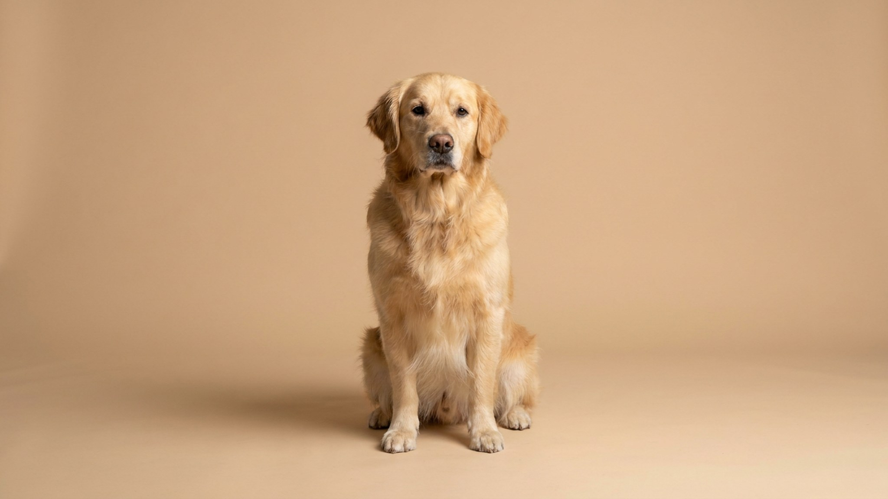

Каждый день видишь питомца — и перестаёшь замечать постепенное. Лишний килограмм у кошки или собаки набирается за несколько месяцев, а понять это на глаз почти невозможно: шерсть скрывает форму. Есть три простых проверки — руками и взглядом — которые занимают минуту и дают чёткий ответ. Ниже — сам тест, почему это важно, и что легко поменять в быту.
🐾 Здоровье питомца под контролем
AI-ветеринар, дневник здоровья и персональные советы для вашего питомца — установите AnimaLife бесплатно.
Этот простой осмотр ветеринары называют BCS — body condition score. Для домашнего наблюдения достаточно трёх точек.
Один-два признака из трёх — повод пересмотреть рацион. Все три — повод показаться ветеринару и взвеситься на точных весах.
Питомец не жалуется. Он так же приходит за лаской, так же реагирует на миску. Набор веса происходит постепенно — 20–30 граммов в неделю у кошки или 50–100 граммов у небольшой собаки. За год это полкилограмма-килограмм, а для питомца весом 4–5 кг это уже 15–25% от нормы.
Ещё один фактор — стерилизация. После операции обмен веществ замедляется, а аппетит нередко растёт. Если не скорректировать рацион в первые месяцы, вес начнёт расти почти незаметно.
Лишний вес не просто «лишний». Он снижает подвижность, увеличивает нагрузку на суставы, влияет на сердечно-сосудистую систему и сокращает активные годы жизни. Питомец с нормальным весом дольше остаётся игривым и подвижным — это не преувеличение, а наблюдение, которое ветеринары повторяют регулярно.
Плановая проверка веса раз в полгода — нормальная часть профилактики. Без записи к врачу не обойтись, если вес питомца резко изменился в любую сторону: заметно вырос за 1–2 месяца или, наоборот, питомец худеет без изменений в рационе. Резкие изменения без очевидной причины требуют внимания специалиста — это уже не вопрос порций.
Материал носит информационный характер и не заменяет очную консультацию ветеринара.
🐾 Первая помощь — всегда под рукой
AnimaLife подскажет, что делать в тревожной ситуации с питомцем ещё до визита к врачу. Откройте в один тап.
🐾 Понравился разбор?
Подпишитесь на канал — каждый день разбираем по одному тревожному симптому у кошек и собак: что в пределах нормы, а когда пора к врачу. Подпишитесь, чтобы не пропустить разбор, который может спасти здоровье вашего питомца.